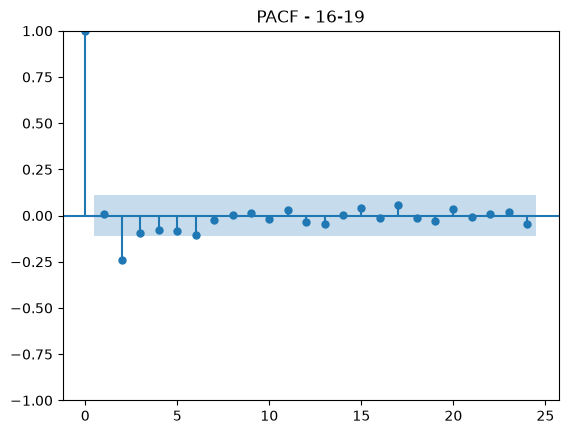
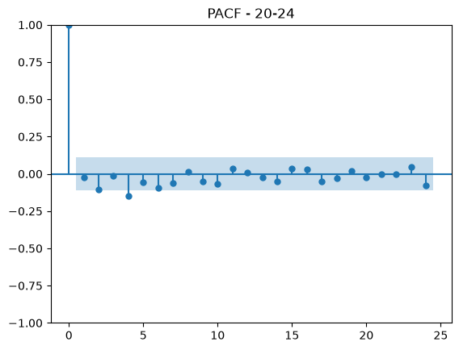
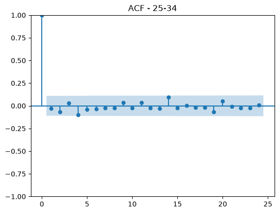
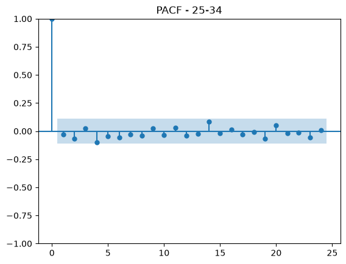
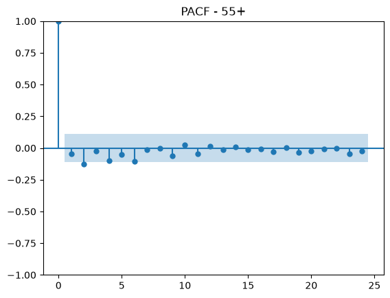
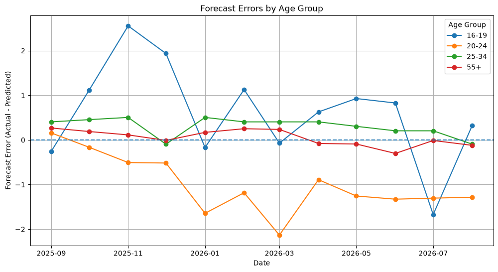

from pathlib import Pathimport os# Find the project folder automaticallycurrent = Path.cwd()possible_folders = [ current,*current.parents, current /"unemployment_project", current /"Documents"/"GitHub"/"nailuciana100-cell.github.io"/"unemployment_project"]PROJECT_FOLDER =next( (folder for folder in possible_foldersif (folder /"data"/"LNS14000012.csv").is_file()),None)if PROJECT_FOLDER isNone:raiseFileNotFoundError("Project folder not found. Open JupyterLab from the project folder." )os.chdir(PROJECT_FOLDER)print("Current folder:", Path.cwd())print("Data folder exists:", Path("data").exists())print("CSV file exists:", Path("data/LNS14000012.csv").exists())
Current folder: C:\Users\nanil\Documents\GitHub\nailuciana100-cell.github.io\unemployment_project
Data folder exists: True
CSV file exists: True
# Make sure all dates have the same formatdf["observation_date"] = pd.to_datetime(df["observation_date"])# Check the first and last datesdf["observation_date"].min(), df["observation_date"].max()
for group in ["16-19", "20-24", "25-34", "55+"]: temp = df[df["age_group"] == group] plt.plot(temp["observation_date"], temp["unemployment_rate"], label=group)plt.xlabel("Year")plt.ylabel("Unemployment Rate (%)")plt.title("U.S. Unemployment Rate by Age Group")plt.legend()plt.show()
# %% Plot unemployment rates from 2000 onwardplt.figure(figsize=(10, 5))for group in ["16-19", "20-24", "25-34", "55+"]: temp = df_recent[df_recent["age_group"] == group] plt.plot( temp["observation_date"], temp["unemployment_rate"], label=group )plt.xlabel("Year")plt.ylabel("Unemployment Rate (%)")plt.title("U.S. Unemployment Rate by Age Group, 2000–2026")plt.legend()plt.tight_layout()plt.savefig("output/unemployment_rates_2000_2026.png", dpi=300, bbox_inches="tight")plt.show()
teen = df_recent[df_recent["age_group"] =="16-19"].copy()
teen = teen.sort_values("observation_date")
teen = teen.set_index("observation_date")
teen.head()
unemployment_rate
age_group
observation_date
2000-01-01
12.7
16-19
2000-02-01
13.8
16-19
2000-03-01
13.3
16-19
2000-04-01
12.6
16-19
2000-05-01
12.8
16-19
teen = teen.asfreq("MS")
teen.isnull().sum()
unemployment_rate 1
age_group 1
dtype: int64
# Fill the missing unemployment rate using linear interpolationteen["unemployment_rate"] = teen["unemployment_rate"].interpolate(method="linear")# Restore the age-group label for the missing monthteen["age_group"] ="16-19"
C:\Users\nanil\AppData\Local\Temp\ipykernel_49212\15816014.py:1: InterpolationWarning: The test statistic is outside of the range of p-values available in the
look-up table. The actual p-value is smaller than the p-value returned.
kpss_result = kpss(y, regression="c", nlags="auto")
plt.figure(figsize=(10,5))plt.plot(y_diff)plt.xlabel("Year")plt.ylabel("Change in Unemployment Rate")plt.title("First Difference of Unemployment Rate, Ages 16-19")plt.show()
C:\Users\nanil\AppData\Local\Temp\ipykernel_49212\329924493.py:1: InterpolationWarning: The test statistic is outside of the range of p-values available in the
look-up table. The actual p-value is greater than the p-value returned.
kpss_diff = kpss(y_diff, regression="c", nlags="auto")
# Save the teenage unemployment forecastsOUTPUT_FOLDER = Path("output")OUTPUT_FOLDER.mkdir(exist_ok=True)forecast_table.to_csv( OUTPUT_FOLDER /"unemployment_forecast_16_19.csv")
for group, data in series.items(): result = kpss(data, regression="c", nlags="auto")print(group)print("KPSS Statistic:", result[0])print("p-value:", result[1])print()
C:\Users\nanil\AppData\Local\Temp\ipykernel_49212\3305076794.py:2: InterpolationWarning: The test statistic is outside of the range of p-values available in the
look-up table. The actual p-value is smaller than the p-value returned.
result = kpss(data, regression="c", nlags="auto")
C:\Users\nanil\AppData\Local\Temp\ipykernel_49212\3305076794.py:2: InterpolationWarning: The test statistic is outside of the range of p-values available in the
look-up table. The actual p-value is greater than the p-value returned.
result = kpss(data, regression="c", nlags="auto")
# Calculate first differences for all four age groupsseries_diff = {}for group in ["16-19", "20-24", "25-34", "55+"]: series_diff[group] = series[group].diff().dropna()print("First differences calculated for all four age groups.")
First differences calculated for all four age groups.
for group, data in series_diff.items(): result = kpss(data, regression="c", nlags="auto")print(group)print("KPSS Statistic:", result[0])print("p-value:", result[1])print()
C:\Users\nanil\AppData\Local\Temp\ipykernel_49212\1416064163.py:2: InterpolationWarning: The test statistic is outside of the range of p-values available in the
look-up table. The actual p-value is greater than the p-value returned.
result = kpss(data, regression="c", nlags="auto")
C:\Users\nanil\AppData\Local\Temp\ipykernel_49212\1416064163.py:2: InterpolationWarning: The test statistic is outside of the range of p-values available in the
look-up table. The actual p-value is greater than the p-value returned.
result = kpss(data, regression="c", nlags="auto")
C:\Users\nanil\AppData\Local\Temp\ipykernel_49212\1416064163.py:2: InterpolationWarning: The test statistic is outside of the range of p-values available in the
look-up table. The actual p-value is greater than the p-value returned.
result = kpss(data, regression="c", nlags="auto")
C:\Users\nanil\AppData\Local\Temp\ipykernel_49212\1416064163.py:2: InterpolationWarning: The test statistic is outside of the range of p-values available in the
look-up table. The actual p-value is greater than the p-value returned.
result = kpss(data, regression="c", nlags="auto")
from statsmodels.graphics.tsaplots import plot_acf, plot_pacfimport matplotlib.pyplot as pltfor group, data in series_diff.items():print("Age Group:", group) plot_acf(data, lags=24) plt.title("ACF - "+ group) plt.savefig(f"output/ACF_{group}.png", dpi=300, bbox_inches="tight") plt.show() plot_pacf(data, lags=24) plt.title("PACF - "+ group) plt.savefig(f"output/PACF_{group}.png", dpi=300, bbox_inches="tight") plt.show()
Age Group: 16-19

Age Group: 20-24

Age Group: 25-34


Age Group: 55+

# Compare AIC and check whether each model convergedimport warningsimport pandas as pdfrom statsmodels.tsa.arima.model import ARIMAmodels = [(1,1,0), (2,1,0), (0,1,1), (0,1,2), (1,1,1), (2,1,2)]results_list = []for group, data in series.items():for order in models:with warnings.catch_warnings(): warnings.simplefilter("ignore") result = ARIMA(data, order=order).fit() results_list.append({"Age Group": group,"ARIMA": str(order),"AIC": round(result.aic, 3),"Converged": result.mle_retvals.get("converged", False) })model_comparison = pd.DataFrame(results_list)print(model_comparison.to_string(index=False))
final_models = {}for group, data in series.items(): order = best_orders[group] model = ARIMA(data, order=order) result = model.fit() final_models[group] = resultprint("Age Group:", group)print("ARIMA Model:", order)print("AIC:", result.aic)print()
Age Group: 16-19
ARIMA Model: (2, 1, 2)
AIC: 1130.1061365239245
Age Group: 20-24
ARIMA Model: (1, 1, 1)
AIC: 997.0134631858796
Age Group: 25-34
ARIMA Model: (0, 1, 1)
AIC: 650.958012193656
Age Group: 55+
ARIMA Model: (1, 1, 1)
AIC: 625.658048866658
forecasts = {}for group, result in final_models.items(): forecast = result.get_forecast(steps=12) forecasts[group] = forecast.predicted_meanprint("Age Group:", group)print(forecast.predicted_mean)print()
plt.figure(figsize=(12,6))for group, forecast in forecasts.items(): plt.plot(forecast.index, forecast.values, marker="o", label=group)plt.title("12-Month Forecast of U.S. Unemployment Rates by Age Group")plt.xlabel("Date")plt.ylabel("Unemployment Rate (%)")plt.legend(title="Age Group")plt.grid(True)plt.savefig("output/future_arima_forecasts.png", dpi=300, bbox_inches="tight")plt.show()
age_groups = ["16-19", "20-24", "25-34", "55+"]plt.figure(figsize=(12,6))for group in age_groups: historical = series[group] forecast = forecasts[group] plt.plot(historical.index, historical.values, label=f"{group} Historical") plt.plot(forecast.index, forecast.values, linestyle="--", label=f"{group} Forecast")plt.title("Historical and Forecasted U.S. Unemployment Rates by Age Group")plt.xlabel("Date")plt.ylabel("Unemployment Rate (%)")plt.legend()plt.grid(True)plt.show()
test_size =12for group in age_groups: data = series[group] train = data.iloc[:-test_size] test = data.iloc[-test_size:]print(group)print("Training observations:", len(train))print("Testing observations:", len(test))print()
16-19
Training observations: 308
Testing observations: 12
20-24
Training observations: 308
Testing observations: 12
25-34
Training observations: 308
Testing observations: 12
55+
Training observations: 308
Testing observations: 12
# Evaluate the selected ARIMA models using the last 12 monthsmodel_orders = best_orderstest_predictions = {}for group in ["16-19", "20-24", "25-34", "55+"]: data = series[group] train = data.iloc[:-12] test = data.iloc[-12:] model = ARIMA(train, order=model_orders[group]) fitted_model = model.fit() predictions = fitted_model.forecast(steps=12) test_predictions[group] = predictionsprint(group)print("ARIMA model:", model_orders[group])print("Forecast complete")print()
plt.figure(figsize=(12,6))for group in age_groups: actual = series[group].iloc[-12:] predicted = test_predictions[group] plt.plot(actual.index, actual.values, label=f"{group} Actual") plt.plot(actual.index, predicted.values, linestyle="--", label=f"{group} Predicted")plt.title("Actual vs. Predicted U.S. Unemployment Rates")plt.xlabel("Date")plt.ylabel("Unemployment Rate (%)")plt.legend()plt.grid(True)plt.savefig("output/actual_vs_predicted.png", dpi=300, bbox_inches="tight")plt.show()
accuracy_results = []for group in age_groups: actual = series[group].iloc[-12:] predicted = test_predictions[group] mae = mean_absolute_error(actual, predicted) rmse = np.sqrt(mean_squared_error(actual, predicted)) accuracy_results.append({"Age Group": group,"MAE": round(mae, 3),"RMSE": round(rmse, 3) })accuracy_table = pd.DataFrame(accuracy_results)accuracy_table
Age Group
MAE
RMSE
0
16-19
0.968
1.215
1
20-24
1.031
1.181
2
25-34
0.332
0.361
3
55+
0.154
0.180
residuals = {}for group in ["16-19", "20-24", "25-34", "55+"]: actual = series[group].iloc[-12:] predicted = test_predictions[group] residuals[group] = actual.values - predicted.valuesprint("Age Group:", group)print("Mean Forecast Error:", round(residuals[group].mean(), 3))print()
Age Group: 16-19
Mean Forecast Error: 0.606
Age Group: 20-24
Mean Forecast Error: -1.005
Age Group: 25-34
Mean Forecast Error: 0.3
Age Group: 55+
Mean Forecast Error: 0.05
# Plot forecast errors for all four age groupsplt.figure(figsize=(12, 6))for group in ["16-19", "20-24", "25-34", "55+"]: dates = series[group].iloc[-12:].index plt.plot( dates, residuals[group], marker="o", label=group )plt.axhline(y=0, linestyle="--")plt.title("Forecast Errors by Age Group")plt.xlabel("Date")plt.ylabel("Forecast Error (Actual - Predicted)")plt.legend(title="Age Group")plt.grid(True)plt.show()

# Ljung-Box test for fitted ARIMA model residualsfrom statsmodels.stats.diagnostic import acorr_ljungboxljung_box_results = {}for group in ["16-19", "20-24", "25-34", "55+"]: model_residuals = final_models[group].resid.iloc[1:] result = acorr_ljungbox( model_residuals, lags=[12], return_df=True ) p_value = result["lb_pvalue"].iloc[0] ljung_box_results[group] = p_valueprint("Age Group:", group)print("Ljung-Box p-value:", round(p_value, 4))print()
Age Group: 16-19
Ljung-Box p-value: 0.9969
Age Group: 20-24
Ljung-Box p-value: 0.696
Age Group: 25-34
Ljung-Box p-value: 0.83
Age Group: 55+
Ljung-Box p-value: 0.8633
# Create an updated model comparison tablesummary_results = []for group in ["16-19", "20-24", "25-34", "55+"]: actual = series[group].iloc[-12:] predicted = test_predictions[group] mae = mean_absolute_error(actual, predicted) rmse = np.sqrt(mean_squared_error(actual, predicted)) mean_error = np.mean(actual.values - predicted.values) summary_results.append({"Age Group": group,"ARIMA Model": str(best_orders[group]),"AIC": round(final_models[group].aic, 3),"MAE": round(mae, 3),"RMSE": round(rmse, 3),"Mean Forecast Error": round(mean_error, 3),"Ljung-Box p-value": round(ljung_box_results[group], 4) })summary_table = pd.DataFrame(summary_results)summary_table
Age Group
ARIMA Model
AIC
MAE
RMSE
Mean Forecast Error
Ljung-Box p-value
0
16-19
(2, 1, 2)
1130.106
0.968
1.215
0.606
0.9969
1
20-24
(1, 1, 1)
997.013
1.031
1.181
-1.005
0.6960
2
25-34
(0, 1, 1)
650.958
0.332
0.361
0.300
0.8300
3
55+
(1, 1, 1)
625.658
0.154
0.180
0.050
0.8633
# Save the updated model summary tablefrom pathlib import PathOUTPUT_FOLDER = Path("output")OUTPUT_FOLDER.mkdir(exist_ok=True)summary_table.to_csv( OUTPUT_FOLDER /"model_summary.csv", index=False)print("Model summary saved successfully!")
plt.figure(figsize=(12,6))for group, data in series.items(): plt.plot(data.index, data.values, label=group)plt.title("U.S. Unemployment Rates by Age Group")plt.xlabel("Date")plt.ylabel("Unemployment Rate (%)")plt.legend(title="Age Group")plt.grid(True)plt.show()
from pathlib import Pathimport pandas as pdOUTPUT_FOLDER = Path("output")OUTPUT_FOLDER.mkdir(exist_ok=True)for group, forecast in forecasts.items(): filename =f"unemployment_forecast_{group.replace('-', '_').replace('+', 'plus')}.csv" forecast.to_csv(OUTPUT_FOLDER / filename)print("All four forecasts saved!")print("Files:", [p.name for p in OUTPUT_FOLDER.glob("unemployment_forecast_*.csv")])
All four forecasts saved!
Files: ['unemployment_forecast_16_19.csv', 'unemployment_forecast_20_24.csv', 'unemployment_forecast_25_34.csv', 'unemployment_forecast_55plus.csv']
plt.figure(figsize=(12, 6))for group in age_groups: residuals = final_models[group].resid plt.plot(residuals.index, residuals, label=group)plt.axhline(0, color="black", linestyle="--")plt.title("ARIMA Residuals by Age Group")plt.xlabel("Date")plt.ylabel("Residual")plt.legend()plt.grid(True)plt.savefig("output/arima_residuals.png", dpi=300, bbox_inches="tight")plt.show()
from pathlib import Pathimport shutilDATA_FOLDER = Path("data")RAW_FOLDER = DATA_FOLDER /"raw"RAW_FOLDER.mkdir(exist_ok=True)for csv_file in DATA_FOLDER.glob("*.csv"): shutil.copy2(csv_file, RAW_FOLDER / csv_file.name)print("Copied:", csv_file.name)print("Files in raw folder:", len(list(RAW_FOLDER.glob("*.csv"))))
Copied: LNS14000012.csv
Copied: LNS14000036.csv
Copied: LNS14000089.csv
Copied: LNS14024230.csv
Files in raw folder: 4
from statsmodels.tsa.stattools import adfuller, kpssimport pandas as pdresults = []for group, data in df_recent.groupby("age_group"): data = data.sort_values("observation_date") series = data["unemployment_rate"].dropna()for version, values in [ ("Original", series), ("First Difference", series.diff().dropna()) ]: adf = adfuller(values, autolag="AIC") kpss_result = kpss(values, regression="c", nlags="auto") results.append({"Age Group": group,"Series": version,"ADF Statistic": round(adf[0], 3),"ADF p-value": round(adf[1], 4),"KPSS Statistic": round(kpss_result[0], 3),"KPSS p-value": round(kpss_result[1], 4) })stationarity_results = pd.DataFrame(results)display(stationarity_results)
C:\Users\nanil\AppData\Local\Temp\ipykernel_49212\3202906071.py:15: InterpolationWarning: The test statistic is outside of the range of p-values available in the
look-up table. The actual p-value is smaller than the p-value returned.
kpss_result = kpss(values, regression="c", nlags="auto")
C:\Users\nanil\AppData\Local\Temp\ipykernel_49212\3202906071.py:15: InterpolationWarning: The test statistic is outside of the range of p-values available in the
look-up table. The actual p-value is greater than the p-value returned.
kpss_result = kpss(values, regression="c", nlags="auto")
C:\Users\nanil\AppData\Local\Temp\ipykernel_49212\3202906071.py:15: InterpolationWarning: The test statistic is outside of the range of p-values available in the
look-up table. The actual p-value is greater than the p-value returned.
kpss_result = kpss(values, regression="c", nlags="auto")
C:\Users\nanil\AppData\Local\Temp\ipykernel_49212\3202906071.py:15: InterpolationWarning: The test statistic is outside of the range of p-values available in the
look-up table. The actual p-value is greater than the p-value returned.
kpss_result = kpss(values, regression="c", nlags="auto")
C:\Users\nanil\AppData\Local\Temp\ipykernel_49212\3202906071.py:15: InterpolationWarning: The test statistic is outside of the range of p-values available in the
look-up table. The actual p-value is greater than the p-value returned.
kpss_result = kpss(values, regression="c", nlags="auto")
C:\Users\nanil\AppData\Local\Temp\ipykernel_49212\3202906071.py:15: InterpolationWarning: The test statistic is outside of the range of p-values available in the
look-up table. The actual p-value is greater than the p-value returned.
kpss_result = kpss(values, regression="c", nlags="auto")
import pandas as pddf_recent = pd.read_csv("data/clean/unemployment_clean.csv")df_recent["observation_date"] = pd.to_datetime(df_recent["observation_date"])print("Dataset loaded successfully!")
Dataset loaded successfully!
import pandas as pdmonthly_data = {}for group in ["16-19", "20-24", "25-34", "55+"]: data = df_recent[df_recent["age_group"] == group].copy() data["observation_date"] = pd.to_datetime(data["observation_date"]) data = data.sort_values("observation_date") data = data.set_index("observation_date") data = data["unemployment_rate"].asfreq("MS") monthly_data[group] = dataprint("Age group:", group)print("Total months:", len(data))print("Missing values:", data.isna().sum())print()
Age group: 16-19
Total months: 320
Missing values: 1
Age group: 20-24
Total months: 320
Missing values: 1
Age group: 25-34
Total months: 320
Missing values: 1
Age group: 55+
Total months: 320
Missing values: 1
for group in ["16-19", "20-24", "25-34", "55+"]: data = monthly_data[group] train = data.loc[:"2025-08-01"] test = data.loc["2025-09-01":"2026-08-01"]print("Age group:", group)print("Training observations:", len(train))print("Testing months:", len(test))print("Available test values:", test.notna().sum())print("Missing test values:", test.isna().sum())print()
Age group: 16-19
Training observations: 308
Testing months: 12
Available test values: 11
Missing test values: 1
Age group: 20-24
Training observations: 308
Testing months: 12
Available test values: 11
Missing test values: 1
Age group: 25-34
Training observations: 308
Testing months: 12
Available test values: 11
Missing test values: 1
Age group: 55+
Training observations: 308
Testing months: 12
Available test values: 11
Missing test values: 1
from statsmodels.tsa.arima.model import ARIMAimport numpy as npimport pandas as pdorders = {"16-19": (2, 1, 2),"20-24": (1, 1, 1),"25-34": (0, 1, 1),"55+": (1, 1, 1)}results = []for group, order in orders.items(): data = monthly_data[group] train = data.loc[:"2025-08-01"] test = data.loc["2025-09-01":"2026-08-01"] model = ARIMA(train, order=order).fit() forecast = model.forecast(steps=12) forecast.index = test.index valid = test.notna() actual = test[valid] predicted = forecast[valid] mae = np.mean(np.abs(actual - predicted)) rmse = np.sqrt(np.mean((actual - predicted) **2)) results.append({"Age Group": group,"ARIMA Model": str(order),"MAE": round(mae, 3),"RMSE": round(rmse, 3),"Test Observations": len(actual) })corrected_results = pd.DataFrame(results)display(corrected_results)
Age Group
ARIMA Model
MAE
RMSE
Test Observations
0
16-19
(2, 1, 2)
0.955
1.224
11
1
20-24
(1, 1, 1)
1.110
1.232
11
2
25-34
(0, 1, 1)
0.321
0.351
11
3
55+
(1, 1, 1)
0.150
0.179
11
benchmark_results = []for group in ["16-19", "20-24", "25-34", "55+"]: data = monthly_data[group] train = data.loc[:"2025-08-01"] test = data.loc["2025-09-01":"2026-08-01"] last_value = train.iloc[-1] actual = test.dropna() benchmark_forecast = np.full(len(actual), last_value) mae = np.mean(np.abs(actual.values - benchmark_forecast)) rmse = np.sqrt(np.mean((actual.values - benchmark_forecast) **2)) benchmark_results.append({"Age Group": group,"Benchmark MAE": round(mae, 3),"Benchmark RMSE": round(rmse, 3) })benchmark_results = pd.DataFrame(benchmark_results)display(benchmark_results)